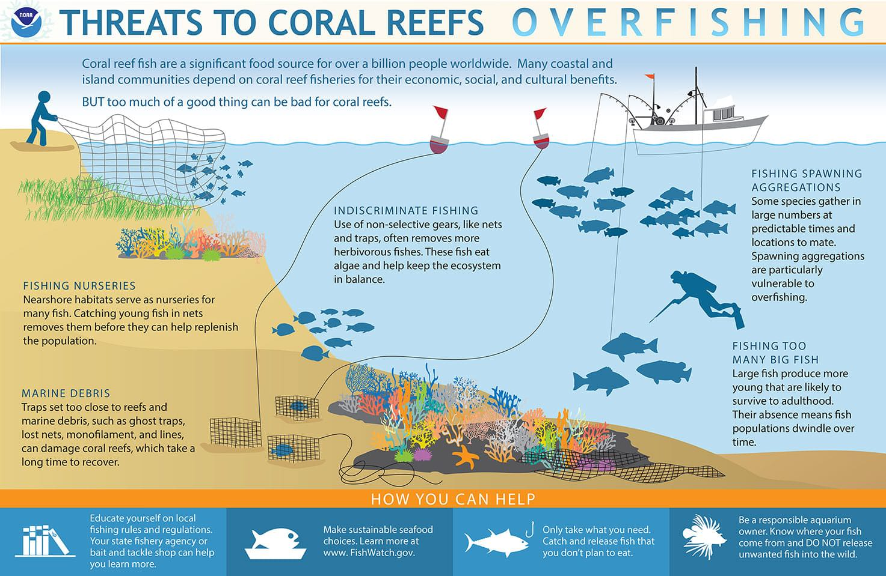
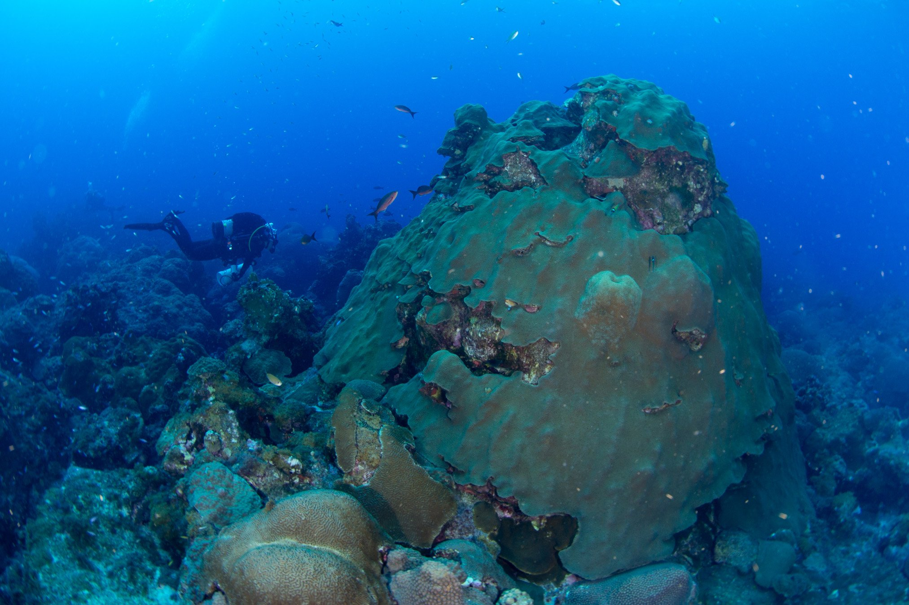
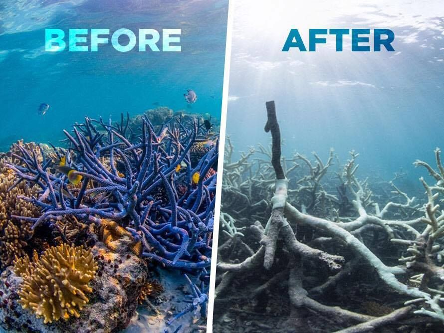
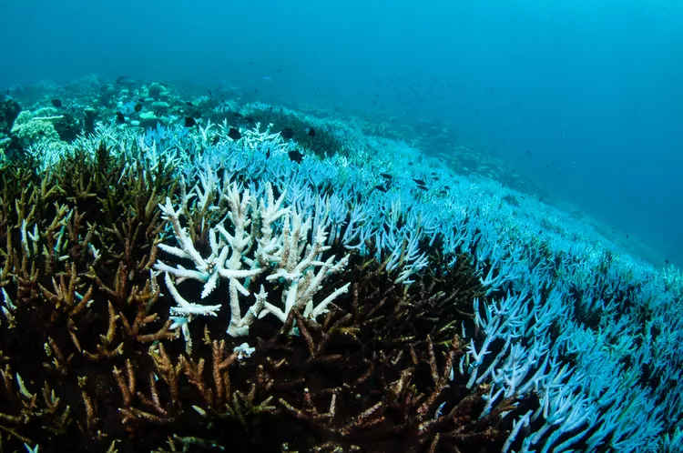
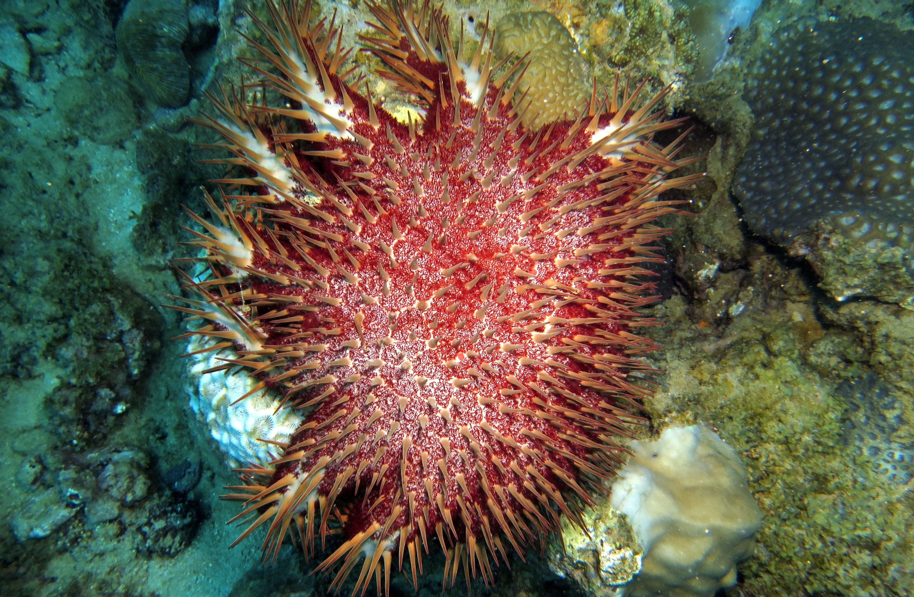

What is Coral Reef Degradation?

Coral reefs are some of the most diverse and valuable ecosystems on Earth, providing critical habitat for nearly 25% of all marine species despite covering less than 1% of the ocean floor. These ecosystems offer numerous benefits to both marine life and humans, serving as natural barriers that protect coastlines from storms and erosion, and supporting millions of livelihoods through tourism, fisheries, and food resources. Additionally, they contribute to global economies by providing essential ecosystem services and supporting marine biodiversity.
However, coral reefs around the world are facing a significant threat: degradation. Coral reef degradation refers to the process of decline in the health, structure, and biodiversity of coral reef ecosystems. This degradation is often the result of a combination of natural stressors, such as storms and diseases, as well as human-induced factors like pollution, overfishing, and climate change. These human activities, particularly rising sea temperatures and ocean acidification due to global warming, have accelerated the deterioration of coral reefs, making them more vulnerable to bleaching events and reduced ability to recover.
As coral reefs degrade, the marine life that depends on them for survival is also impacted, leading to a loss of biodiversity and disruption of food chains. This decline not only affects marine ecosystems but also threatens human populations who rely on coral reefs for food, economic activities, and coastal protection. The degradation of coral reefs represents a global environmental issue, highlighting the urgent need for conservation efforts to protect and restore these vital ecosystems.
Causes of Coral Reef Degradation

The major causes of coral reef degradation include:
- Climate change and global warming, which increase sea temperatures and cause coral bleaching.
- Pollution from agricultural runoff, chemicals, plastics, and sewage.
- Overfishing and destructive fishing methods such as dynamite fishing.
- Coastal development and increased sedimentation.
1. Climate Change

Credit: Infographic created by students of the Applied Visual Science Lab, Christine deSylva, Kelly Martin, Leslie Thompson, Ye Wang, and Yiran Zhu.
Climate change is causing a significant increase in sea temperatures, leading to coral bleaching. During bleaching events, corals expel the symbiotic algae called zooxanthellae, which provide food through photosynthesis. Without these algae, corals lose their color and energy source, making them more vulnerable to diseases and death (Hughes et al., 2017). Additionally, extreme weather events, such as storms and hurricanes, can inflict physical damage on coral reefs, breaking apart structures and reducing their ability to recover.
For more information on how coral reefs are affected by climate change, visit this link.
2. Ocean Acidification

Credit: NOAA
The absorption of excess atmospheric CO2 by the oceans leads to a decrease in pH levels, a process known as ocean acidification. This reduces the availability of carbonate ions essential for corals to build their calcium carbonate skeletons. As a result, coral growth rates decline, and existing structures become more fragile (Hein et al., 2020).
Understanding Ocean Acidification
Ocean acidification refers to the ongoing decrease in the pH levels of Earth's oceans, primarily due to the absorption of excess carbon dioxide (CO2) from the atmosphere. Since the start of the industrial revolution, the average pH of surface ocean waters has fallen from about 8.2 to approximately 8.1, which corresponds to an increase in acidity of about 30%. This change in ocean chemistry has significant implications for marine life, particularly for organisms that build shells and skeletons from calcium carbonate, such as corals, mollusks, and some plankton species.
Causes of Ocean Acidification
- Increased CO2 Emissions: Human activities such as burning fossil fuels and deforestation lead to higher levels of CO2 in the atmosphere, a significant portion of which is absorbed by the oceans.
- Chemical Reactions: When CO2 dissolves in seawater, it forms carbonic acid, which then dissociates to release hydrogen ions, lowering pH levels and increasing acidity.
Impacts on Marine Life
Ocean acidification has profound effects on marine ecosystems:
- Calcifying Organisms: Shellfish, corals, and other marine organisms that rely on calcium carbonate face difficulties in building and maintaining their shells and skeletons. For instance, studies show that pteropods, tiny sea snails, can suffer from shell dissolution in more acidic waters.
- Disruption of Food Webs: Altered behavior and survival rates of species like clownfish affect predator-prey dynamics, potentially destabilizing entire marine food webs.
For more detailed information, visit the NOAA's resource collection on Ocean Acidification.
3. Pollution

A plastic bottle wedged in a coral reef. Dr. Kathryn Berry
Agricultural runoff introduces high levels of nutrients into coastal waters, promoting algal growth that can smother corals (Fabricius, 2005). Additionally, industrial discharges and sewage introduce harmful chemicals and heavy metals, which can be toxic to corals and other marine life (Fabricius, 2005).
The Alarming Impact of Plastic Pollution
Recent studies reveal that the pollution of our oceans, particularly from plastics, poses a grave threat to coral reefs, essential ecosystems that support marine biodiversity and provide livelihoods for millions. A significant research effort surveyed nearly 125,000 coral reefs across the Asia-Pacific region and identified 11.1 billion pieces of plastic debris entangled in corals. This plastic not only physically damages the corals but also heightens their susceptibility to deadly diseases by up to 89 percent.
Researchers discovered various types of plastic waste, including bottles, bags, and fishing gear, embedded within the vibrant coral structures. Coral reefs, which make up 55.5 percent of the world's coral systems, are crucial as they house approximately 25 percent of all marine species.
How Plastics Harm Corals
Plastics inflict damage on corals through multiple mechanisms:
- Physical Injury: Sharp plastic edges can cut the corals' delicate skin, leading to open wounds that invite infections.
- Bacterial Colonization: Plastics often carry bacteria that can directly infect corals, exacerbating their health issues.
- Light Blockage: Large debris can shade corals, disrupting their photosynthesis and creating conditions favorable for harmful pathogens.
The consequences of these injuries can be severe. Once infected, corals may die, leading to the collapse of entire colonies, which can further spread the disease to adjacent coral groups.
Future Projections and Solutions
Alarmingly, researchers predict that plastic entanglement on coral reefs could increase by 40 percent by 2025, reaching 15.7 billion pieces. This projection comes at a time when coral reefs are already stressed due to rising ocean temperatures, which lead to coral bleaching events that strip corals of their life-sustaining algae.
Efforts to combat this issue are underway. Improved waste management systems and recycling initiatives in high-pollution countries like Indonesia could substantially mitigate plastic waste entering the oceans. Programs like NextWave, which involves companies like Dell and General Motors, aim to intercept ocean plastics and recycle them into new products.
The Urgency of Action
Given the straightforward solutions available, tackling plastic pollution is seen as more achievable than addressing climate change. Scientists and environmental advocates emphasize the need for immediate action to reduce plastic usage, enhance waste management infrastructure, and promote public awareness.
Through concerted efforts, it is possible to protect these vital ecosystems and ensure that coral reefs can thrive for future generations.
For more details, read the full article here.
4. Overfishing

Credit: NOAA
Overfishing poses a significant threat to coral reef ecosystems, impacting not only the marine life that inhabits these reefs but also the communities that rely on them for food and economic stability. Coral reef fish are vital sources of nutrition for over a billion people globally, making the health of these ecosystems crucial for both ecological balance and human livelihoods.
Overfishing of key species, particularly herbivorous fish, disrupts the balance of reef ecosystems. Without these fish, algae can overgrow, outcompeting corals for space and resources, leading to a decline in coral cover (Bellwood et al., 2004).
The Importance of Coral Reef Fisheries
Coral reefs support essential commercial, recreational, and subsistence fisheries, particularly in the U.S. and its territories. Fishing activities are deeply embedded in the cultural and social fabric of many coastal and island communities, where they provide critical food sources and income. However, unsustainable fishing practices can lead to the depletion of key reef species, which in turn affects the entire ecosystem and local economies dependent on these resources.
Impact of Overfishing
- Depletion of Key Species: Unsustainable fishing practices lead to a decline in vital fish populations, disrupting the ecological balance of coral reefs. This depletion has a ripple effect, threatening the biodiversity that coral reefs support.
- Damage from Fishing Gear: Certain fishing methods can inflict serious physical damage to coral reefs and seagrass beds. Gear that is not carefully managed can destroy these fragile habitats, making recovery a lengthy process.
- Nutrient Imbalance: Overfishing can lead to the loss of herbivorous fish species, which play a critical role in controlling algae growth. Without these fish, algae can proliferate, smothering corals and disrupting the ecosystem.
- Impact on Spawning Aggregations: Many fish species congregate at specific times and locations to spawn. These spawning aggregations are particularly vulnerable to overfishing, leading to reduced reproduction rates and population declines.
- Fishing Young Fish: The capture of juvenile fish removes them from the ecosystem before they can reproduce, exacerbating the decline of fish populations.
Taking Action Against Overfishing
To combat the effects of overfishing, individuals can take several proactive steps:
- Educate Yourself: Familiarize yourself with local fishing regulations and practices. Resources such as state fishery agencies and local bait and tackle shops can provide valuable information.
- Choose Sustainable Seafood: Make informed choices by supporting sustainable seafood practices. Websites like FishWatch offer insights into sustainable fishing.
- Practice Responsible Fishing: Only catch what you need, and consider catch-and-release methods for fish you do not plan to eat.
- Be a Responsible Aquarium Owner: Understand the origins of aquarium fish and never release unwanted fish into the wild, as they can disrupt local ecosystems.
For more information on the impacts of overfishing on coral reefs, visit the NOAA National Ocean Service.
5. Coastal Development and Coral Reefs

Credit: NOAA
Coastal development activities, such as construction and dredging, significantly threaten coral habitats by increasing sedimentation, which smothers corals and reduces light needed for photosynthesis. Scientists at NOAA’s Atlantic Oceanic and Meteorological Laboratory (AOML) are studying the effects of dredged sediments from the Port of Miami on the threatened coral species *Orbicella faveolata* (mountainous star coral).
Recent laboratory experiments indicate that sedimentation adversely affects coral larvae, impacting their survival and settlement rates. Increased turbidity from dredging can hinder coral growth and reproduction by blocking sunlight. The study emphasizes the importance of understanding the sub-lethal effects of sedimentation during coral larvae's early life stages to inform conservation efforts.
The findings aim to assist local environmental managers in implementing policies to mitigate the impacts of coastal development and dredging, especially during coral reproduction periods.
Impact on Humans and the Environment

The loss of coral reefs has far-reaching consequences, impacting both marine life and human communities.
- Loss of biodiversity and habitat destruction for marine species.
- Economic losses in industries reliant on coral reefs, such as tourism and fishing.
- Increased coastal erosion and loss of natural protection against storms.
1. Loss of Biodiversity

Credit: Marine Conservation Society
Coral reefs support about 25% of all marine species, including fish, invertebrates, and plants. When reefs degrade, many species lose their habitats, leading to a decline in biodiversity. This loss disrupts the balance of marine ecosystems and can lead to the extinction of vulnerable species (Hughes et al., 2017).
The IPCC’s Sixth Assessment Report reveals that the degradation of coral reefs in Southeast Asia and the Indian Ocean could affect approximately 4.5 million people due to the impacts of global warming and human activities. Coral reefs, which cover only 0.1% of global ocean surfaces, support over 25% of marine biodiversity and are critical for the livelihoods of millions of fishers in the region. Economic losses from coral degradation are estimated at $27.78 million to $31.72 million annually in Vietnam and around $33.6 million in Bangladesh.
The report warns of the risk of irreversible loss of marine ecosystems, especially with a temperature increase of 2°C or more. The oceans absorb over 93% of excess heat, resulting in marine heatwaves that can disrupt fisheries. Coral growth is predicted to decline significantly, with rising seawater temperatures causing widespread bleaching and increased disease severity. Urgent conservation and climate action are needed to protect these vital ecosystems.
For more information, visit Down to Earth.
2. Economic Impact

Credit: Courtesy of Marine Françoise @ Reef Conservation
The economic value of coral reefs is immense. They contribute billions to global economies through tourism, fisheries, and coastal protection. As reefs degrade, communities that rely on these ecosystems face financial challenges, impacting local economies and food security (Cesar et al., 2003).
Coral reefs in Mauritius and Seychelles cover over 2,653 km² and are essential for local economies, particularly through tourism, which accounted for around 12% of GDP in Mauritius and over 39% in Seychelles in 2019. These reefs provide significant ecosystem services valued at approximately USD 2.7 trillion annually. They support over 4,000 fish species and contribute to coastal protection, buffering shorelines against storms and flooding, making them vital for tourism.
However, coral reefs face significant threats. Climate change is the primary concern, with predictions that 70-90% of reef-building corals may die even with modest global warming. Major bleaching events have already occurred, severely impacting coral cover. Human activities, such as overfishing, pollution from land-based sources, and unsustainable coastal development, exacerbate these threats.
The UNDP, with support from the Adaptation Fund, is implementing a project aimed at restoring coral reefs in Mauritius and Seychelles, focusing on enhancing resilience against climate change by restoring 2.5 hectares of reefs in Mauritius and 2.5 hectares in Seychelles, along with additional efforts in Rodrigues.
For more information, visit Coral Reefs and Their Importance for Island Economies.
3. Coastal Protection

Healthy coral reefs with live coral provide much greater protection against coastal flooding than degraded reefs with low live coral cover. NOAA
Coral reefs play a crucial role in providing flood protection, valued at over $1.8 billion annually in the U.S. They mitigate flood damage, reducing direct costs to properties by more than $800 million and preventing additional losses of around $1 billion related to lives and livelihoods. Reefs act as natural barriers, absorbing wave energy and preventing coastal flooding, which is especially vital during tropical storms.
Despite their benefits, coral reefs are under severe threat from climate change, pollution, and overfishing, leading to significant degradation. Valuing natural infrastructure, like coral reefs, is essential to encourage investment in their protection. Disaster recovery funds should be allocated to rebuilding reefs, given their proven ability to reduce flood damage.
Specific regions, like Florida and Puerto Rico, significantly benefit from reef protection. For instance, reefs in Florida provide $675 million in flood protection annually.
Collaboration from various sectors, including federal agencies and the insurance industry, is needed to support investments in natural coastal defenses. Healthy ecosystems can bolster resilience against climate-related disasters.
Immediate action is crucial to protect and restore coral reefs, as their preservation is essential for biodiversity and economic stability in coastal communities. Read more here.
Conservation Efforts

To protect coral reefs, various conservation efforts are being implemented:
- Establishing Marine Protected Areas (MPAs) to limit harmful human activities.
- Restoring coral reefs through coral nurseries and transplantation projects.
- Reducing pollution and improving water quality.
- Promoting sustainable fishing practices.
- Global efforts to mitigate climate change.
1. Establishing Marine Protected Areas (MPAs)

Credit: World Wildlife Fund
Marine Protected Areas (MPAs) are designated sections of the ocean where governments limit human activities to protect marine environments. These areas often allow for non-destructive activities, such as recreational fishing, while restricting harmful practices like overfishing and pollution. As of 2023, there are over 5,000 MPAs worldwide, covering more than 8% of the ocean.
MPAs address various threats to marine ecosystems, including overfishing, pollution, and climate change, which have led to declines in fish and marine mammal populations.
MPAs can have different names and levels of protection, such as marine parks, marine reserves, and no-take zones. Their goals vary, with some focused on habitat conservation, others on protecting historical sites (e.g., the USS Monitor National Marine Sanctuary), and some aimed at ensuring sustainable fisheries (e.g., Georges Bank).
Levels of Protection:
- No-entry MPAs: Complete prohibition of human access, often for research.
- No-take MPAs: Fishing and collecting are banned, but recreational activities are allowed.
- Multiple-use MPAs: Allow for regulated fishing and other activities, often divided into zones with different rules.
MPAs are created by national, state, local, and tribal governments, sometimes in cooperation across borders (e.g., the Pelagos Sanctuary for Mediterranean Marine Mammals). Protection levels may vary by season to support breeding cycles of vital species.
Significant MPAs include:
- Phoenix Islands Protected Area: The world's largest MPA, covering 410,500 square kilometers.
- Echo Bay Marine Provincial Park: The smallest MPA, at just 0.4 hectares.
MPAs serve as essential tools for conservation, supporting biodiversity and sustainable use of ocean resources, while providing opportunities for research and recreation. They play a critical role in the health of marine ecosystems and the well-being of coastal communities.
For more information, visit National Geographic: Importance of Marine Protected Areas.
2. Restoring Coral Reefs

Credit: An underwater nursery where new corals are grown. (Photo: Coral Restoration Foundation)
Coral reefs are crucial ecosystems that provide coastal protection, habitat for marine life, and significant economic benefits, contributing approximately $10 trillion globally and over $3 billion domestically each year. However, these ecosystems face severe threats from climate change, pollution, invasive species, and physical damage, leading to a loss of 30 to 50 percent of global coral reefs.
Without significant intervention, coral reefs risk global extinction by the end of the century. To address these challenges, a multi-faceted approach is required, focusing on increasing resources for restoration and improving the efficiency of conservation efforts.
NOAA leads efforts in coral research, conservation, and restoration, targeting major threats such as climate change, fishing impacts, and pollution. The program emphasizes the following strategies:
- Improving Habitat Quality: Supporting research to mitigate competition from invasive species.
- Preventing Coral Loss: Identifying high-risk areas and providing emergency responses to damage.
- Enhancing Resilience: Developing innovative techniques to improve coral larvae survival and collaborating on large-scale restoration efforts.
- Improving Coral Health: Enhancing methods to control diseases affecting corals.
Coral nurseries and transplantation projects are crucial for restoring damaged reefs. In coral nurseries, scientists cultivate coral fragments that can later be transplanted onto degraded reefs. This process aids in reef recovery and enhances resilience against climate change and other stressors (Edwards & Gomez, 2007).
Successful case studies include:
- Florida: The Mission: Iconic Reefs project aims to restore coral cover significantly across seven reef sites.
- Puerto Rico: Following hurricanes, NOAA has reattached over 10,000 broken corals, achieving over 90% survival rates in restored areas.
- Hawaii: Innovative methods using native sea urchins to control invasive algae have helped restore urban reefs.
NOAA partners with state and local organizations to effectively leverage funding and build local capacity for coral restoration projects.
For more information, visit NOAA Fisheries - Restoring Coral Reefs.
3. Reducing Pollution

Credit: Aquaread blog
Pollution from land-based sources poses a significant threat to coral reefs. Efforts to reduce pollution focus on improving water quality through better waste management, reducing agricultural runoff, and limiting plastic use. Cleaner waters help maintain healthy coral ecosystems and prevent harmful algal blooms (Fabricius, 2005).
Key Actions to Combat Sea Pollution
- Reduce Plastic Production & Waste: Minimize plastic use and advocate for government legislation to reduce plastic waste and enhance waste management systems.
- Improve Wastewater Systems: Upgrade outdated infrastructure to prevent untreated sewage from contaminating oceans.
- Use Eco-Friendly Products: Opt for reusable items, natural cleaning products, sustainably sourced seafood, and non-toxic personal care items.
- Reduce Chemical Pollution: Regulate harmful chemicals in agriculture and promote organic practices to minimize runoff.
- Manage Oil Spills: Implement better safety standards and regulatory measures to prevent and respond to oil spills effectively.
- Beach & River Cleanups: Participate in community cleanup efforts to remove waste and support organizations focused on large-scale projects.
- Monitoring & Measuring Progress: Advocate for ongoing water quality monitoring and increased funding to achieve clean water targets.
For more information, visit the Aquaread blog.
4. Promoting Sustainable Fishing Practices

Credit: Iberdrola
Sustainable fishing practices are essential for protecting coral reef ecosystems. The overexploitation of seas and oceans is threatening marine life, as highlighted by the United Nations Food and Agriculture Organization (FAO). A sustainable fishing model is vital not only for the survival of fish species but also for the fishing industry itself.
Overfishing has led to a significant decline in marine biodiversity, impacting over 3 billion people who depend on the ocean for their livelihoods. Increased fishing efforts have forced fleets to travel further to find productive waters, leading to the overexploitation of new fishing grounds and territorial conflicts, particularly in vulnerable regions. Furthermore, illegal fishing, which generates around $36 billion annually, degrades marine ecosystems and threatens food security.
According to the FAO, 33.1% of commercial fish species are at risk due to intensive fishing practices, with the Mediterranean and Black Sea showing that over 62% of fish populations are affected. To counter these issues, sustainable fishing practices promote the protection of marine fauna by respecting ecosystems and adapting to fish reproductive rates to maintain ecological balance. They reject the indiscriminate capture of juvenile or endangered species and utilize bycatch to minimize waste, such as turning it into fishmeal.
Sustainable small-scale fisheries account for approximately 66% of all catches meant for human consumption and provide employment for 90% of the global fishing industry, supporting small fishing communities. By generating less waste and minimizing harmful chemical usage, sustainable fishing contributes significantly to pollution reduction. Standards such as the Marine Stewardship Council (MSC) help certify sustainable fisheries, ensuring responsible management practices.
In addition to wild fishing, sustainable aquaculture is becoming increasingly important. It should follow principles such as fair compensation for aquaculturists, equitable distribution of costs and benefits, environmental management for future generations, and sustainable growth to ensure long-term viability.
By adopting sustainable fishing practices, we can protect marine ecosystems and ensure the availability of fish for future generations while supporting local communities that rely on these vital resources (Hilborn et al., 2004).
For more information, visit Iberdrola: Sustainable Fishing.
5. Global Efforts to Mitigate Climate Change

Credit: Asia-Pacific Network for Global Change Research
Climate change poses the most significant threat to coral reefs globally. Conservation efforts focus on reducing greenhouse gas emissions and promoting renewable energy sources. Global initiatives, such as the Paris Agreement, aim to limit temperature rise and support vulnerable marine ecosystems (Hoegh-Guldberg et al., 2018).
Key points discussed include:
- Speaking Up – Advocate for energy-efficient products and renewable energy.
- Using Renewable Energy – Install solar panels or participate in community solar programs.
- Electrifying Homes and Transportation – Switch to electric appliances, heat pumps, and electric vehicles.
- Conserving Energy – Buy energy-efficient appliances and reduce overall energy consumption.
- Conserving Water – Fix leaks and use water-efficient appliances.
- Changing Transportation – Use public transport, walk, bike, and minimize air travel.
- Conserving Forests – Stop deforestation and get involved in reforestation projects.
- Climate-Friendly Gardening – Minimize synthetic fertilizers and grow local plants.
- Reducing Emissions from Food Choices – Eat less meat, reduce food waste, and compost.
- Consuming Less – Reuse items, buy secondhand goods, and reduce unnecessary purchases.
For more information, visit Paleontological Research Institution: Ten Ways You Can Mitigate Climate Change.
Insights and Call to Action

Credit: the winning design in the competition to design a poster client NatureExhibits c/o The Paly Foundation, Arizona, USA graphic design Martina Lipovac software Adobe Illustrator, Adobe Photoshop photos and graphics Marine Photobank, Dollar photo club year of a project 2015.
The rapid degradation of coral reefs is one of the most pressing environmental challenges of our time. These ecosystems are vital, not just for their unparalleled biodiversity, but also for the livelihoods, coastal protection, and food security they provide to millions of people. Coral reefs act as natural barriers, shielding coastlines from storms and erosion, and serve as critical habitats for countless marine species. The loss of coral reefs would have a devastating ripple effect, impacting marine life, economies, and coastal communities globally.
However, the root causes of coral reef degradation are vast and interconnected, including climate change, overfishing, pollution, and unsustainable tourism practices. Rising sea temperatures caused by global warming lead to coral bleaching, a phenomenon where corals lose their color and vital symbiotic algae, often resulting in coral death. Meanwhile, pollutants such as plastic waste, agricultural runoff, and industrial discharge further weaken coral health, compounding the problem.
Immediate and decisive action is required at every level—local, national, and global. Governments must enact stricter environmental regulations, implement marine protected areas, and invest in large-scale restoration projects. International agreements, such as the Paris Agreement, are crucial in addressing climate change and reducing carbon emissions that contribute to coral bleaching. Organizations must work to support these initiatives while fostering sustainable development that aligns economic growth with environmental protection.
Individuals also play an essential role in coral reef conservation. By making informed and conscious choices, such as supporting sustainable seafood practices, reducing plastic waste, and participating in reef-friendly tourism, we can lessen our environmental impact. Moreover, engaging in local clean-up efforts, advocating for climate action, and raising awareness about coral reef conservation will help create a collective movement toward preserving these ecosystems.
Coral reefs may seem distant to many, but their survival is intrinsically linked to the health of the planet. By taking action now, we can protect these underwater treasures for future generations, ensuring that they continue to thrive and support life in our oceans. The time to act is now—through shared responsibility, innovation, and a commitment to sustainability, we can pave the way toward a future where coral reefs not only survive but flourish once again.
Disclaimer
This digital page is part of a school project aimed at raising awareness about coral reef degradation. All images and videos used are credited to their respective owners, and this project does not aim to infringe on any copyrights. For educational purposes only.